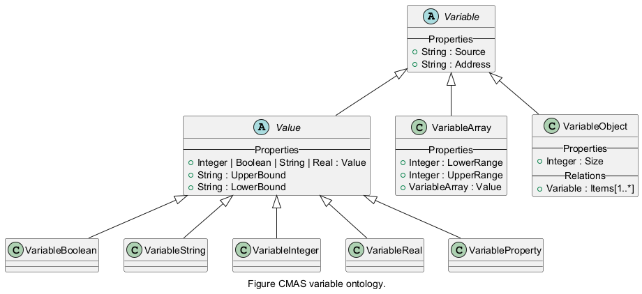

Variables are used to represent values within agents, interfaces, goals and other CMAS objects. A variable may represent a single value, an array, or a structured object. The actual data stored by a variable is handled by a value object (see Variable types). Different variable types extend the basic variable concept to support primitive values, arrays, or structured objects. Variables are used to represent values within agents, interfaces, goals, and other CMAS objects. A variable may represent a single value, an array, or a structured object. The underlying data of a variable is represented by a value object.
The following simplified diagram illustrates the relationships between the main variable types in CMAS. For the complete ontology see Ontology.

For additional details see:
CMAS supports several variable types depending on the structure of the data. A variable may represent a primitive value, an array, or a structured object.
Primitive values can be of the following types:
In addition to primitive values, CMAS also supports:
Array variables store an indexed collection of values, while object variables store a structured set of variables.
The Agent object has a relation called Variables that can host variables of any type. Variables can be added to an agent in the modeling tree by using the Add new button, or by selecting the Variable commands in the Modeling tab of the ribbon. The following example demonstrates how a variable called counter can be used to count time during execution.
In this example, the variable counter is stored in the agent and updated continuously while the agent is running.
The following example demonstrates how to use an array variable in an agent. It shows two common ways to access elements: by index and using a foreach loop. For an array variable, the LowerRange and UpperRange properties can be modified in the property editor during modeling to change the array size.
In this example:
An object variable is used to group several related variables into a structured object.
Specifically, an Object Variable hosts other variables inside its Items relation.
It is possible to add variables of different types, including new Object or Array variables, to the Items relation.
This allows you to build complex nested structures within a single object variable.
A value exposes optional functions that can be overridden to customize the behavior of value access.
| Function | Description |
|---|---|
| onBeforeRead(value : <type>) : <type> | Called before the value is read. |
| onAfterRead(value : <type>) : <type> | Called after the value has been read. |
| onBeforeWrite(oldValue, newValue : <type>) : <type> | Called before the value is written. |
| onAfterWrite(oldValue, newValue : <type>) : <type> | Called after the value has been written. |
These functions allow the user to intercept and modify the value or other properties before the value is returned.
The onBeforeRead function is called when a variable value is about to be read.
The purpose of onBeforeRead is to be able to modify properties related to the read operation before the value is retrieved or processed.
Typical use cases include:
For example, an adapter may dynamically update the address that will be used to retrieve the value from an external system.
The returned value will be used as the initial value for the read operation.
The onAfterRead function is called after the variable value has been read and before it is returned to the caller.
The purpose of onAfterRead is to allow post-processing of the retrieved value. This makes it possible to validate, transform or filter the value before it is used by the system.
Typical use cases include:
The returned value will be the final value delivered to the caller.
The onBeforeWrite function is called when a value is about to be written to a variable.
The purpose of onBeforeWrite is to allow preprocessing or validation of the new value before it is stored or propagated.
This can be used to enforce constraints, modify metadata, or adjust the value dynamically.
Typical use cases include:
The onAfterWrite function is called after a value has been written to a variable.
The purpose of onAfterWrite is to allow post-processing or notifications after the write operation has completed.
This can be used to update dependent variables, trigger events, or perform logging.
Typical use cases include: